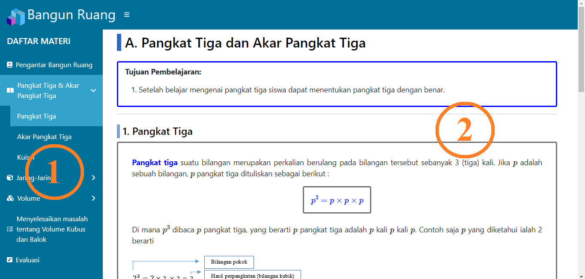
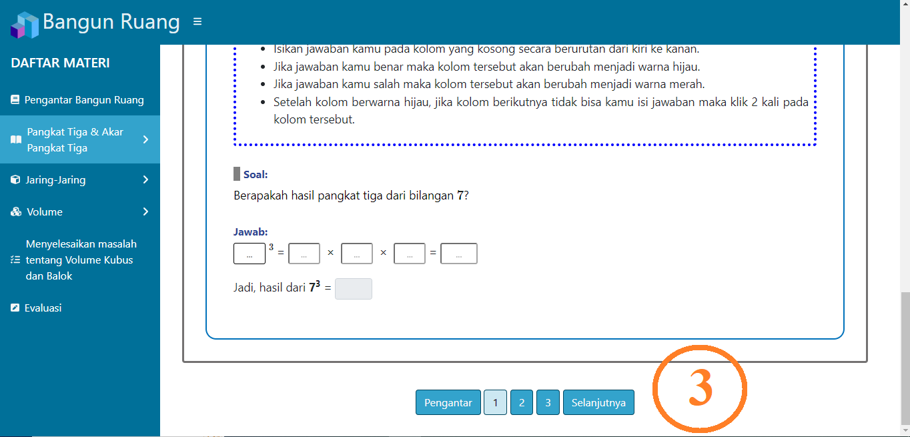
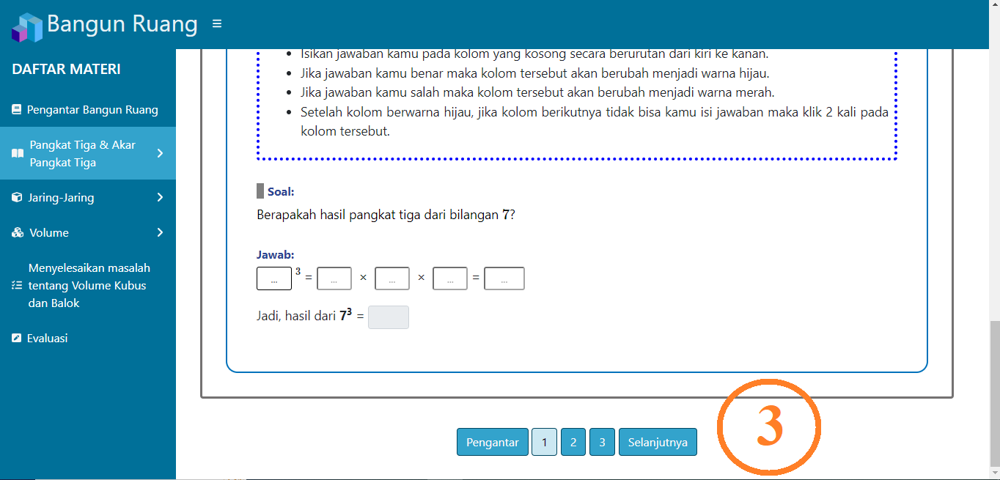

Kembali
KembaliInformasi Aplikasi
Perihal
Media pembelajaran ini dibuat untuk memenuhi persyaratan dalam menyelesaikan Program Strata-1 Pendidikan Komputer dengan judul tugar akhir : "Pengembangan Media Pembelajaran Interaktif Berbasis Web pada Materi Bangun Ruang untuk Siswa Kelas V SD dengan Metode Drill and Practice".
Tentang Author
| Nama | : | Noor Lailani |
| : | 1710131320032@mhs.ulm.ac.id | |
| Dosen Pembimbing 1 | : | Dr. R. Ati Sukmawati, M.Kom. |
| Dosen Pembimbing 2 | : | Yuni Suryaningsih, M.Pd. |
| Program Studi | : | Pendidikan Komputer |
| Fakultas | : | Fakultas Keguruan dan Ilmu Pendidikan |
| Universitas | : | Universitas Lambung Mangkurat |
Daftar Pustaka
Damayanti, D. (2017). Buku Siswa Matematika Untuk Siswa SD/MI Kelas V. Depok: CV BINA PUSTAKA.
Gunanto, & Adhalia, D. (2016). ESPS (Erlangga Straight Point Series) Untuk SD/MI Kelas V. Erlangga.
Purnomosadi, W. S., & Giyanti, I. (2018). Senang Belajar Matematika SD/MI Kelas V.
Daftar Pustaka



Keterangan:
- Nomor 1 adalah sidebar. Sidebar adalah salah satu bentuk navigasi yang terdapat pada media pembelajaran ini. Sidebar memiliki fungsi yang sama seperti daftar isi pada sebuah buku. Dengan sidebar, pengguna dapat melakukan perpindahan antar sub bab.
- Nomor 2 adalah konten. Konten di sebelah kiri memuat materi bangun ruang, sedangkan konten di sebelah kanan adalah konten pendukung yang memuat contoh soal serta pertanyaan.
- Nomor 3 adalah deretan tombol navigasi yang bersifat linear. Tombol navigasi ini berfungsi untuk berpindah ke halaman sebelum atau sesudah, serta berfungsi untuk melakukan perpindahan halaman pada sub bab yang sama.